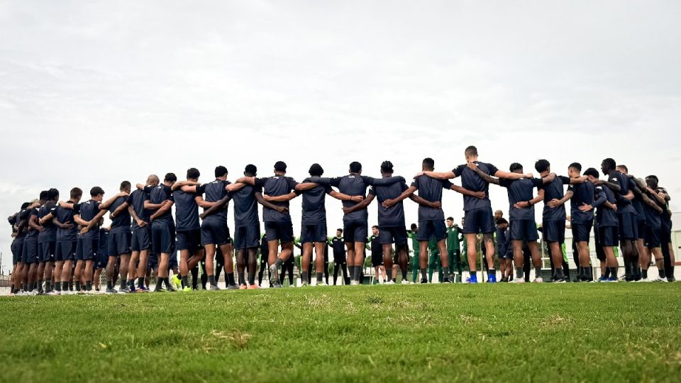
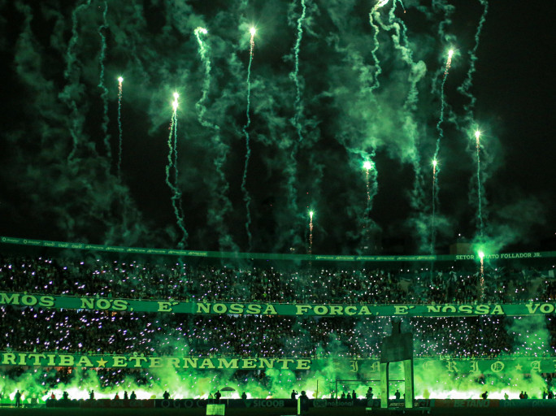
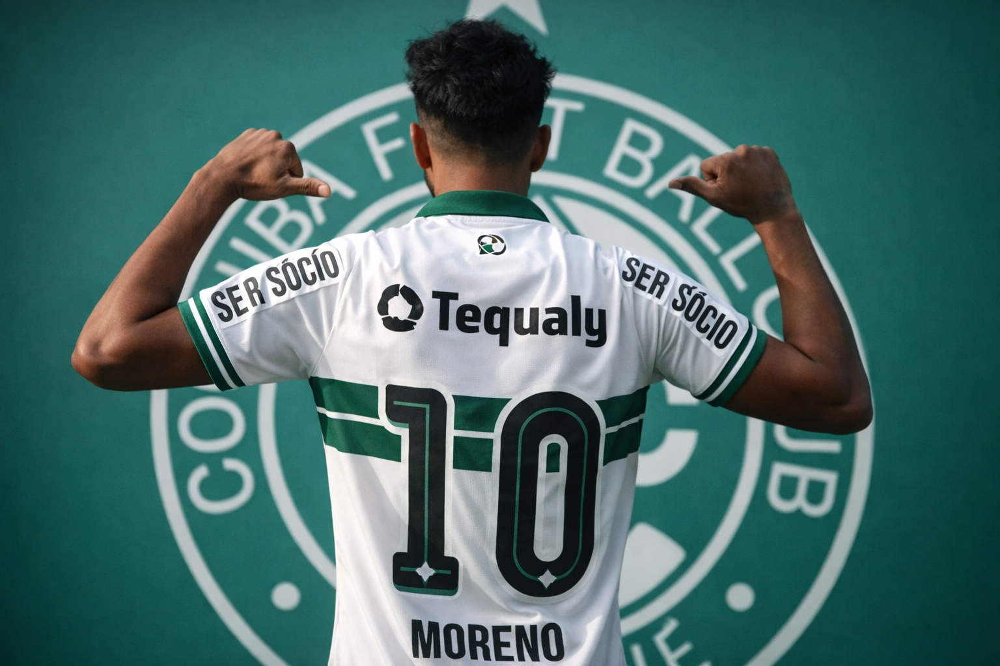

Coritiba Foot Ball Club
Um site inspirado no Coxa, com história, paixão, torcida e toda a força do verde e branco.
Um site inspirado no Coxa, com história, paixão, torcida e toda a força do verde e branco.

O elenco segue preparação intensa visando desempenho forte e seguro dentro de campo.
Ler mais
A energia da arquibancada segue sendo um dos grandes pilares do clube em dias de jogo.
Ler maisO estádio coxa-branca segue empurrando o time rumo às vitórias e grandes partidas.
Ler maisData: 11/03/2026
Horário: 21:30
Local: Neo Química Arena
Data: 15/03/2026
Horário: 18:30
Local: Couto Pereira
Data: 18/03/2026
Horário: 20:00
Local: José Maria de Campos Maia
Segurança debaixo das traves e liderança defensiva.

Criatividade, marcação e controle do ritmo da partida.

Velocidade, drible e presença forte no setor ofensivo.
O Coritiba Foot Ball Club é um dos clubes mais tradicionais do futebol brasileiro. Fundado em 1909, construiu uma trajetória marcada por títulos, grandes campanhas e uma torcida apaixonada.
O Couto Pereira é um dos estádios mais conhecidos do país e representa toda a força da identidade coxa-branca. Ao longo das décadas, o clube se consolidou como símbolo importante do futebol paranaense.
Este site é um modelo visual para homenagear o Coritiba, reunindo informações, estilo esportivo e um visual moderno.
Curitiba - PR
contato@coritibafc.com
(41) 99999-9999
@coritiba
Faça parte dessa história, acompanhe cada jogo, sinta a energia da torcida e esteja cada vez mais próximo do Coxa.
Quero ser sócio